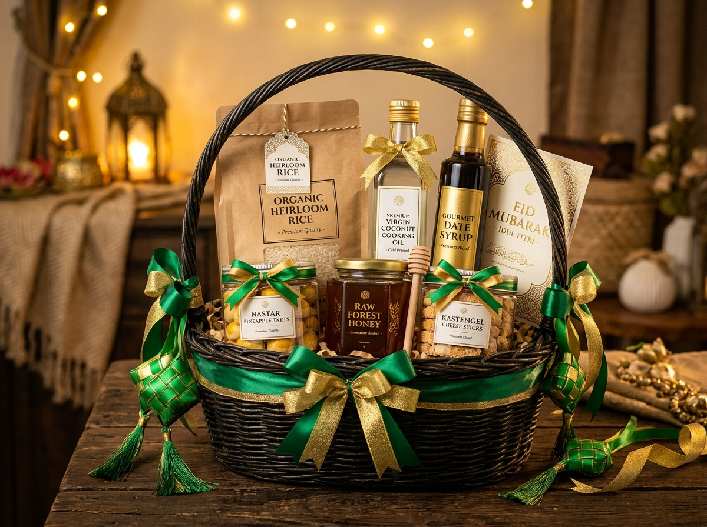

Menjelang Hari Raya Idulfitri, tradisi menghantarkan bingkisan menjadi momen hangat untuk mempererat tali silaturahmi. Di antara ragam pilihan hampers hari ini, parcel Lebaran sembako kian diminati karena memadukan nilai tradisi dengan manfaat guna yang langsung dirasakan oleh penerima.
Mengapa Parcel Lebaran Sembako Menjadi Pilihan Bingkisan?
Parcel Lebaran sembako menjadi pilihan populer karena menggabungkan tradisi berbagi dengan kebutuhan rumah tangga. Isi paket dapat langsung dimanfaatkan penerima untuk menyiapkan makanan dan kebutuhan selama perayaan Idulfitri.
Tradisi memberikan bingkisan menjelang Lebaran memiliki nilai sosial yang erat dengan kebersamaan. Parcel tidak hanya menjadi simbol perhatian, tetapi juga bentuk kepedulian nyata terhadap kebutuhan orang yang menerimanya.
Berbeda dengan hadiah dekoratif, parcel sembako memiliki nilai guna yang jelas. Beras, minyak goreng, gula pasir, tepung terigu, dan susu merupakan contoh produk yang dapat digunakan dalam aktivitas rumah tangga sehari-hari.
Ada beberapa alasan utama mengapa parcel sembako sangat layak dipertimbangkan:
1. Memberikan Manfaat Langsung
Bahan pokok merupakan kebutuhan esensial. Penerima tidak harus mencari kegunaan tambahan karena sebagian besar isi parcel dapat langsung digunakan untuk memasak atau menyiapkan hidangan hari raya bagi keluarga besar.
2. Fleksibel untuk Berbagai Anggaran
Parcel sembako dapat dibuat dengan berbagai komposisi. Paket ekonomis dapat berisi minyak goreng, gula, teh, dan mi instan. Sementara paket yang lebih lengkap dapat menambahkan beras premium, sirup, mentega, dan makanan pendamping. Anda juga dapat membaca panduan lengkap 10 ide isi parcel sembako Lebaran untuk melihat alternatif kombinasi produk.
3. Cocok untuk Berbagai Segmen Penerima
Parcel sembako dapat diberikan secara personal kepada keluarga, kerabat, dan tetangga, maupun dialokasikan oleh instansi sebagai corporate gift Lebaran bagi karyawan, pelanggan, hingga mitra bisnis perusahaan.
4. Mudah Dikembangkan Menjadi Bingkisan Premium
Kemasan memiliki peran penting dalam meningkatkan tampilan parcel. Penggunaan keranjang rotan kokoh, goodie bag tematik, boks karton rigid board, hingga kontainer multifungsi dapat membuat kebutuhan pokok dapur tampil sangat eksklusif dan bergengsi.
Apa Saja Isi Parcel Lebaran Sembako yang Ideal?
Isi parcel Lebaran sembako yang ideal terdiri dari kebutuhan pokok berkualitas, memiliki kemasan yang higienis dan baik, serta sesuai dengan alokasi anggaran dan kebutuhan spesifik penerima.
Berikut beberapa produk yang dapat dijadikan komponen utama:
- Beras: Beras merupakan komoditas utama dalam paket sembako. Pilihan beras dapat disesuaikan dengan target penerima, mulai dari beras konsumsi harian keluarga hingga beras pandan wangi atau beras premium bersertifikasi.
- Minyak Goreng: Minyak goreng kemasan sangat praktis untuk disusun ke dalam parcel. Kemasan botol memberikan tampilan yang kokoh dan rapi, sedangkan kemasan pouch dapat menjadi alternatif ekonomis yang efisien.
- Gula Pasir: Produk wajib untuk kebutuhan minuman, olahan takjil, hingga aneka masakan rumah tangga Idulfitri.
- Tepung Terigu dan Mentega: Kombinasi tepung terigu dan mentega sangat cocok untuk parcel bertema bahan kue, sehingga penerima dapat berkreasi membuat camilan Lebaran bersama keluarga.
- Sirup, Teh, dan Kopi: Produk minuman memberikan kesegaran variatif pada isi parcel untuk keperluan menjamu sanak keluarga yang bertamu saat hari raya.
- Mi Instan dan Makanan Kemasan: Mi instan, sarden kaleng, kornet, dan bumbu instan kemasan dapat melengkapi paket sembako agar semakin variatif.
- Produk Tambahan: Untuk mendongkrak nilai eksklusivitas, paket sembako dapat dipadukan dengan toples nastar dan kastengel, madu murni, atau perlengkapan ibadah seperti sarung dan sajadah travel.

Berapa Harga Parcel Lebaran Sembako?
Harga parcel Lebaran sembako dipengaruhi oleh jenis produk, jumlah isi, ukuran kemasan, kualitas bahan pokok, serta biaya dekorasi dan wadah pengemasan. Untuk simulasi rincian biaya yang lebih komprehensif, Anda dapat membaca ulasan panduan harga parcel sembako Lebaran.
Secara umum, kategori anggaran parcel sembako dapat dikelompokkan sebagai berikut:
Paket Ekonomis di Bawah Rp100.000
Paket ekonomis merupakan pilihan ideal untuk pembagian bingkisan sosial, zakat, atau pembagian massal kepada warga sekitar.
Contoh kombinasi isi:
- Minyak goreng pouch 500 ml
- Gula pasir 500 gram
- Teh celup isi 25
- 3 bungkus mi instan
- 1 kaleng/bungkus wafer hemat
Paket Lengkap dan Premium Rp100.000 – Rp500.000+
Paket lengkap menawarkan variasi produk yang melimpah dan kemasan yang lebih kokoh, cocok untuk hadiah keluarga mertua, staf instansi, nasabah prioritas, dan mitra bisnis.
Contoh kombinasi isi:
- Beras premium 3–5 kg
- Minyak goreng botol 2 liter
- Gula pasir kristal 1 kg
- Mentega kaleng & tepung terigu 1 kg
- Susu kental manis & sirup marjan/bango
- Bumbu dapur kemasan & biskuit kaleng
Paket Tematik Sehat
Parcel tematik sehat mengutamakan bahan makanan organik atau bernutrisi tinggi, seperti beras merah/hitam organik, minyak zaitun extra virgin, madu hutan murni, susu almond, dan granola sehat.
Bagaimana Cara Memilih Parcel Sembako Berdasarkan Kebutuhan?
Menentukan parcel sembako yang tepat sebaiknya dimulai dengan mengidentifikasi siapa profil penerima, apa tujuan utama pemberian, serta batasan anggaran yang dialokasikan.
- Untuk Keluarga dan Kerabat: Utamakan produk kebutuhan dapur yang sering dikonsumsi. Tambahkan sentuhan manis seperti sirup atau stoples kue kering agar terasa lebih personal dan akrab.
- Untuk Karyawan Perusahaan: Konsistensi isi sangat penting. Pilih komposisi paket yang seragam, bermanfaat nyata untuk dapur karyawan, serta mudah didistribusikan saat menjelang cuti bersama. Panduan lengkapnya dapat dipelajari di artikel paket sembako Lebaran untuk karyawan dan perusahaan.
- Untuk Mitra Bisnis dan Klien B2B: Parcel untuk relasi bisnis sebaiknya menggunakan kemasan hardbox atau keranjang rotan eksklusif, disertai kartu ucapan khusus berlogo perusahaan.
- Untuk Program Sosial dan CSR: Prioritaskan kelengkapan komoditas pangan pokok dengan kemasan kardus praktis yang kokoh dan mudah diangkut secara massal.
Apa Perbedaan Parcel Sembako Ekonomis, Premium, dan Tematik?
Tabel berikut merangkum perbandingan utama komposisi, wadah kemasan, dan target penerima:
| Kategori | Komposisi Utama | Kemasan | Target Penerima |
|---|---|---|---|
| Ekonomis | Minyak goreng pouch, gula, teh celup, mi instan, wafer | Goodie bag / kardus jinjing | Program CSR, zakat, & pembagian massal |
| Lengkap | Beras, minyak goreng 1-2L, gula, sirup, mentega, susu | Keranjang anyaman / box motif Lebaran | Keluarga, kerabat, & staf kantor |
| Premium | Bahan pokok pilihan, madu, biskuit kaleng, tableware / toples kue | Hardbox luxury / keranjang rotan eksklusif | Mitra bisnis, vendor, & relasi VIP |
| Tematik Sehat | Beras merah/hitam, minyak zaitun, madu organik, granola, kacang | Wooden box / rustic ecofriendly bag | Penerima dengan preferensi gaya hidup sehat |
Bagaimana Membuat Parcel Sembako Terlihat Menarik?
Meskipun berisi barang kebutuhan dapur, parcel sembako dapat ditata secara estetik dan mewah melalui teknik kurasi kemasan:
- Pilih Wadah yang Proporsional: Sesuaikan ukuran keranjang rotan atau boks karton dengan total volume dan bobot produk agar tidak tampak sesak atau kopong.
- Gunakan Filling dan Lining yang Rapi: Lapisi dasar wadah dengan kertas cacah (shredded paper), karton padat, atau kain satin renda untuk memberikan bantalan sekaligus menambah keindahan visual.
- Susun Berdasarkan Distribusi Berat: Tempatkan produk berat seperti beras dan minyak goreng di bagian bawah atau belakang sebagai fondasi. Letakkan barang ringan seperti teh celup dan stoples kue di bagian depan atas.
- Pastikan Posisi Produk Stabil: Rekatkan produk menggunakan selotip bening tanpa merusak kemasan asli, agar susunan tidak roboh saat diangkat.
- Finishing dengan Wrapping dan Pita Satin: Bungkus rapi dengan plastik shrink wrapping bening, sematkan pita kain satin warna senada (seperti hijau zamrud, emas, atau navy), serta kartu ucapan Idulfitri resmi.
Bagaimana Cara Mengemas Parcel Sembako agar Aman Dikirim?
Pengemasan parcel sembako memerlukan perhatian ekstra karena beban komoditas pangan relatif berat dan beberapa item menggunakan botol kaca:
- Periksa kondisi fisik kemasan produk sebelum dirangkai, pastikan segel rapat dan tanggal kedaluwarsa panjang.
- Gunakan bubble wrap tebal berlapis khusus untuk produk botol sirup kaca atau toples madu.
- Gunakan kardus pelindung luar (outer carton box) berdinding ganda (double-wall corrugated box) untuk pengiriman ekspedisi ke luar kota.
- Isi rongga kosong kardus dengan styrofoam atau air cushion agar isi parcel tidak berguncang.
- Tempelkan stiker peringatan FRAGILE dan arah posisi atas (This Side Up).
Kesalahan yang Harus Dihindari Saat Memilih Parcel Sembako
Hindari beberapa kekeliruan umum berikut agar parcel yang Anda kirimkan memberikan kesan terbaik:
- Tidak Memeriksa Masa Kedaluwarsa: Selalu pastikan masa kedaluwarsa produk pangan minimal 6 hingga 12 bulan ke depan.
- Terlalu Fokus pada Tampilan Luar: Keranjang yang besar dengan hiasan berlebihan namun isinya sedikit justru akan mengecewakan penerima. Utamakan kebermanfaatan dan kualitas produk.
- Salah Menilai Daya Tahan Kemasan: Menggunakan plastik tipis untuk menopang beban beras dan minyak berisiko robek di perjalanan.
- Tidak Memperhitungkan Biaya Logistik: Karena berat sembako cukup signifikan, pastikan Anda telah mengonfirmasi ongkos kirim armada kurir bersama pihak vendor parcel Lebaran sebelum menyetujui anggaran final.
Bagaimana Perusahaan Mengelola Pemesanan Parcel Sembako dalam Jumlah Besar?
Bagi divisi HRD dan Procurement, pengadaan parcel sembako untuk ratusan karyawan menuntut ketelitian dalam spesifikasi produk dan ketepatan waktu distribusi. Langkah-langkah taktis pengadaan mencakup:
- Menghitung jumlah penerima pasti dan cadangan 2–5% untuk kebutuhan susulan.
- Menetapkan pagu anggaran per paket (budget per pax) yang telah disetujui manajemen.
- Memilih komposisi bahan pokok bermerek resmi yang telah terdaftar BPOM dan bersertifikat Halal MUI.
- Menyesuaikan branding perusahaan melalui kartu ucapan berlogo, stiker hangtag, atau custom sleeve packaging.
- Mengonfirmasi jadwal pengiriman jauh-jauh hari sebelum libur cuti bersama perbankan dan ekspedisi logistik.
Pertanyaan Seputar Parcel Lebaran Sembako
Isi parcel Lebaran sembako umumnya meliputi beras, minyak goreng, gula pasir, tepung terigu, teh, sirup, mi instan, dan makanan pendamping kemasan seperti sarden atau biskuit.
Ya. Parcel sembako sangat cocok untuk perusahaan yang ingin memberikan bingkisan bermanfaat nyata kepada karyawan, pelanggan setia, dan mitra bisnis menjelang Idulfitri.
Anggaran bergantung pada jenis produk dan wadah, mulai dari paket ekonomis di bawah Rp100.000 hingga paket lengkap dan premium Rp100.000 hingga Rp500.000+ per box.
Parcel sembako berfokus pada kebutuhan pokok dapur sehari-hari (beras, minyak, gula), sedangkan hampers makanan biasanya didominasi oleh kue kering siap santap, pastry, atau produk kuliner gourmet.
Pilih vendor dengan reputasi terpercaya yang menyediakan transparansi spesifikasi merek produk, jaminan produk halal BPOM, sampel fisik, proteksi kemasan yang kokoh, dan kepastian jadwal kirim.
Ya. Komposisi produk, ukuran kemasan, pita hias, kartu ucapan, hingga branding logo perusahaan dapat disesuaikan sepenuhnya melalui layanan parcel custom.
Kesimpulan
Parcel Lebaran sembako merupakan pilihan bingkisan istimewa yang menggabungkan nilai kepedulian, manfaat ekonomi nyata, dan tradisi berbagi hari raya. Pilihan isinya sangat fleksibel, mulai dari paket ekonomis untuk kegiatan sosial hingga paket premium berbalut keranjang rotan mewah untuk mitra korporasi.
Sebelum memesan, pastikan Anda telah menetapkan pagu anggaran, memahami preferensi penerima, dan memilih vendor terpercaya yang mampu menjamin keutuhan kemasan serta ketepatan waktu pengiriman.
Jelajahi berbagai pilihan parcel Lebaran sembako yang dapat disesuaikan dengan kebutuhan keluarga maupun perusahaan Anda. Konsultasikan bersama tim kurator kami untuk mendapatkan rekomendasi paket, pilihan isi, dan penawaran harga terbaik.
Ingin Konsultasi Pengadaan Parcel Lebaran Sembako?
Dapatkan penawaran resmi katalog sembako dan hampers Lebaran 2027. Tersedia layanan custom logo dan pengiriman multi-alamat ke seluruh Indonesia.